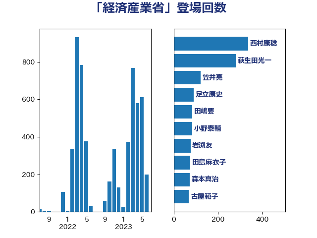

単語「経済産業省」

| 西村康稔 | 自由民主党 | 336 回 |
| 萩生田光一 | 自由民主党 | 281 回 |
| 笠井亮 | 日本共産党 | 122 回 |
| 足立康史 | 日本維新の会 | 91 回 |
| 田嶋要 | 立憲民主党 | 84 回 |
| 小野泰輔 | 日本維新の会 | 83 回 |
| 岩渕友 | 日本共産党 | 76 回 |
| 田島麻衣子 | 立憲民主党 | 75 回 |
| 森本真治 | 立憲民主党 | 72 回 |
| 古屋範子 | 公明党 | 69 回 |
| 竹内譲 | 公明党 | 67 回 |
| 鈴木義弘 | 国民民主党 | 64 回 |
| 山崎誠 | 立憲民主党 | 64 回 |
| 落合貴之 | 立憲民主党 | 62 回 |
| 礒崎哲史 | 国民民主党 | 50 回 |
| 馬場雄基 | 立憲民主党 | 47 回 |
| 大島敦 | 立憲民主党 | 47 回 |
| 空本誠喜 | 日本維新の会 | 45 回 |
| 根本匠 | 自由民主党 | 44 回 |
| 山岡達丸 | 立憲民主党 | 44 回 |
| 石井正弘 | 自由民主党 | 43 回 |
| 青柳仁士 | 日本維新の会 | 39 回 |
| 菅直人 | 立憲民主党 | 39 回 |
| 荒井優 | 立憲民主党 | 39 回 |
| 斉藤鉄夫 | 公明党 | 37 回 |
| 青山繁晴 | 自由民主党 | 36 回 |
| 阿部知子 | 立憲民主党 | 36 回 |
| 中野洋昌 | 公明党 | 36 回 |
| 河野太郎 | 自由民主党 | 35 回 |
| 山口壯 | 自由民主党 | 35 回 |
| 小林鷹之 | 自由民主党 | 34 回 |
| 吉川沙織 | 立憲民主党 | 32 回 |
| 里見隆治 | 公明党 | 31 回 |
| 村田享子 | 立憲民主党 | 31 回 |
| 鈴木敦 | 国民民主党 | 30 回 |
| 猪瀬直樹 | 日本維新の会 | 30 回 |
| 石井章 | 日本維新の会 | 29 回 |
| 漆間譲司 | 日本維新の会 | 29 回 |
| 田村まみ | 国民民主党 | 28 回 |
| 岸田文雄 | 自由民主党 | 27 回 |
| 石川博崇 | 公明党 | 26 回 |
| 太田房江 | 自由民主党 | 26 回 |
| 西村明宏 | 自由民主党 | 25 回 |
| 篠原孝 | 立憲民主党 | 25 回 |
| 加藤勝信 | 自由民主党 | 24 回 |
| 鬼木誠 | 立憲民主党 | 23 回 |
| 小沼巧 | 立憲民主党 | 23 回 |
| 米山隆一 | 立憲民主党 | 22 回 |
| 浅野哲 | 国民民主党 | 22 回 |
| 平林晃 | 公明党 | 22 回 |
| 音喜多駿 | 日本維新の会 | 21 回 |
| 枝野幸男 | 立憲民主党 | 21 回 |
| 岩田和親 | 自由民主党 | 21 回 |
| 阿達雅志 | 自由民主党 | 20 回 |
| 辻元清美 | 立憲民主党 | 19 回 |
| 竹詰仁 | 国民民主党 | 19 回 |
| 福島伸享 | 無所属 | 19 回 |
| 細田健一 | 自由民主党 | 18 回 |
| 鈴木俊一 | 自由民主党 | 17 回 |
| 本庄知史 | 立憲民主党 | 17 回 |
| 新妻秀規 | 公明党 | 17 回 |
| 岸真紀子 | 立憲民主党 | 17 回 |
| 勝部賢志 | 立憲民主党 | 17 回 |
| 金子恵美 | 立憲民主党 | 16 回 |
| 金城泰邦 | 公明党 | 16 回 |
| 石井苗子 | 日本維新の会 | 16 回 |
| 川田龍平 | 立憲民主党 | 16 回 |
| 川崎ひでと | 自由民主党 | 16 回 |
| 逢坂誠二 | 立憲民主党 | 15 回 |
| 河野義博 | 公明党 | 15 回 |
| 後藤茂之 | 自由民主党 | 15 回 |
| 阿部司 | 日本維新の会 | 14 回 |
| 若松謙維 | 公明党 | 14 回 |
| 清水貴之 | 日本維新の会 | 14 回 |
| 梅谷守 | 立憲民主党 | 14 回 |
| 林芳正 | 自由民主党 | 14 回 |
| 平山佐知子 | 無所属 | 14 回 |
| 山本太郎 | れいわ新選組 | 14 回 |
| 松野博一 | 自由民主党 | 13 回 |
| 杉尾秀哉 | 立憲民主党 | 13 回 |
| 山下貴司 | 自由民主党 | 13 回 |
| 塩川鉄也 | 日本共産党 | 13 回 |
| ながえ孝子 | 無所属 | 13 回 |
| 舩後靖彦 | れいわ新選組 | 12 回 |
| 福田昭夫 | 立憲民主党 | 12 回 |
| 矢倉克夫 | 公明党 | 12 回 |
| 末松信介 | 自由民主党 | 12 回 |
| 小熊慎司 | 立憲民主党 | 12 回 |
| 塩田博昭 | 公明党 | 12 回 |
| 佐藤正久 | 自由民主党 | 12 回 |
| 井坂信彦 | 立憲民主党 | 12 回 |
| 中谷真一 | 自由民主党 | 12 回 |
| 長友慎治 | 国民民主党 | 11 回 |
| 田村貴昭 | 日本共産党 | 11 回 |
| 前川清成 | 日本維新の会 | 11 回 |
| 上田清司 | 国民民主党 | 11 回 |
| 近藤和也 | 立憲民主党 | 10 回 |
| 赤木正幸 | 日本維新の会 | 10 回 |
| 田村智子 | 日本共産党 | 10 回 |
| 早稲田ゆき | 立憲民主党 | 10 回 |
| 宮本徹 | 日本共産党 | 10 回 |
| 古賀篤 | 自由民主党 | 10 回 |
| 高木かおり | 日本維新の会 | 9 回 |
| 長峯誠 | 自由民主党 | 9 回 |
| 金村龍那 | 日本維新の会 | 9 回 |
| 野村哲郎 | 自由民主党 | 9 回 |
| 赤羽一嘉 | 公明党 | 9 回 |
| 西野太亮 | 自由民主党 | 9 回 |
| 櫻井周 | 立憲民主党 | 9 回 |
| 岡田直樹 | 自由民主党 | 9 回 |
| 宮本岳志 | 日本共産党 | 9 回 |
| 吉良よし子 | 日本共産党 | 9 回 |
| 一谷勇一郎 | 日本維新の会 | 9 回 |
| 黄川田仁志 | 自由民主党 | 8 回 |
| 高市早苗 | 自由民主党 | 8 回 |
| 関芳弘 | 自由民主党 | 8 回 |
| 近藤昭一 | 立憲民主党 | 8 回 |
| 緒方林太郎 | 無所属 | 8 回 |
| 秋本真利 | 無所属 | 8 回 |
| 福重隆浩 | 公明党 | 8 回 |
| 松原仁 | 立憲民主党 | 8 回 |
| 市村浩一郎 | 日本維新の会 | 8 回 |
| 山添拓 | 日本共産党 | 8 回 |
| 山岸一生 | 立憲民主党 | 8 回 |
| 土田慎 | 自由民主党 | 8 回 |
| 吉川ゆうみ | 自由民主党 | 8 回 |
| 長島昭久 | 自由民主党 | 7 回 |
| 芳賀道也 | 国民民主党 | 7 回 |
| 石橋通宏 | 立憲民主党 | 7 回 |
| 田中健 | 国民民主党 | 7 回 |
| 橋本岳 | 自由民主党 | 7 回 |
| 梅村聡 | 日本維新の会 | 7 回 |
| 木村英子 | れいわ新選組 | 7 回 |
| 平木大作 | 公明党 | 7 回 |
| 山口晋 | 自由民主党 | 7 回 |
| 小沢雅仁 | 立憲民主党 | 7 回 |
| 大岡敏孝 | 自由民主党 | 7 回 |
| 伊藤忠彦 | 自由民主党 | 7 回 |
| 三浦信祐 | 公明党 | 7 回 |
| 鎌田さゆり | 立憲民主党 | 6 回 |
| 鈴木淳司 | 自由民主党 | 6 回 |
| 遠藤良太 | 日本維新の会 | 6 回 |
| 牧義夫 | 立憲民主党 | 6 回 |
| 源馬謙太郎 | 立憲民主党 | 6 回 |
| 渡辺博道 | 自由民主党 | 6 回 |
| 池畑浩太朗 | 日本維新の会 | 6 回 |
| 森山浩行 | 立憲民主党 | 6 回 |
| 梅村みずほ | 日本維新の会 | 6 回 |
| 柳ヶ瀬裕文 | 日本維新の会 | 6 回 |
| 松木けんこう | 立憲民主党 | 6 回 |
| 杉久武 | 公明党 | 6 回 |
| 末次精一 | 立憲民主党 | 6 回 |
| 島村大 | 自由民主党 | 6 回 |
| 山本香苗 | 公明党 | 6 回 |
| 宮本周司 | 自由民主党 | 6 回 |
| 大野敬太郎 | 自由民主党 | 6 回 |
| 大串博志 | 立憲民主党 | 6 回 |
| 塩崎彰久 | 自由民主党 | 6 回 |
| 塚田一郎 | 自由民主党 | 6 回 |
| 吉良州司 | 無所属 | 6 回 |
| 佐藤啓 | 自由民主党 | 6 回 |
| 井原巧 | 自由民主党 | 6 回 |
| 齋藤健 | 自由民主党 | 5 回 |
| 高橋千鶴子 | 日本共産党 | 5 回 |
| 青島健太 | 日本維新の会 | 5 回 |
| 長浜博行 | 無所属 | 5 回 |
| 自見はなこ | 自由民主党 | 5 回 |
| 石原宏高 | 自由民主党 | 5 回 |
| 江田憲司 | 立憲民主党 | 5 回 |
| 横山信一 | 公明党 | 5 回 |
| 柴田巧 | 日本維新の会 | 5 回 |
| 本田顕子 | 自由民主党 | 5 回 |
| 斎藤アレックス | 国民民主党 | 5 回 |
| 打越さく良 | 立憲民主党 | 5 回 |
| 山井和則 | 立憲民主党 | 5 回 |
| 奥下剛光 | 日本維新の会 | 5 回 |
| 堤かなめ | 立憲民主党 | 5 回 |
| 城内実 | 自由民主党 | 5 回 |
| 坂本祐之輔 | 立憲民主党 | 5 回 |
| 伊藤孝恵 | 国民民主党 | 5 回 |
| 井上哲士 | 日本共産党 | 5 回 |
| 中野英幸 | 自由民主党 | 5 回 |
| 中田宏 | 自由民主党 | 5 回 |
| 下条みつ | 立憲民主党 | 5 回 |
| 野田聖子 | 自由民主党 | 4 回 |
| 道下大樹 | 立憲民主党 | 4 回 |
| 赤澤亮正 | 自由民主党 | 4 回 |
| 谷田川元 | 立憲民主党 | 4 回 |
| 西田実仁 | 公明党 | 4 回 |
| 若宮健嗣 | 自由民主党 | 4 回 |
| 船橋利実 | 自由民主党 | 4 回 |
| 舟山康江 | 国民民主党 | 4 回 |
| 福島みずほ | 社会民主党 | 4 回 |
| 牧山ひろえ | 立憲民主党 | 4 回 |
| 滝波宏文 | 自由民主党 | 4 回 |
| 河西宏一 | 公明党 | 4 回 |
| 松本洋平 | 自由民主党 | 4 回 |
| 松本剛明 | 自由民主党 | 4 回 |
| 杉田水脈 | 自由民主党 | 4 回 |
| 末松義規 | 立憲民主党 | 4 回 |
| 日下正喜 | 公明党 | 4 回 |
| 徳永エリ | 立憲民主党 | 4 回 |
| 庄子賢一 | 公明党 | 4 回 |
| 山際大志郎 | 自由民主党 | 4 回 |
| 山谷えり子 | 自由民主党 | 4 回 |
| 山田美樹 | 自由民主党 | 4 回 |
| 山田太郎 | 自由民主党 | 4 回 |
| 山本博司 | 公明党 | 4 回 |
| 山本剛正 | 日本維新の会 | 4 回 |
| 山下芳生 | 日本共産党 | 4 回 |
| 小野田紀美 | 自由民主党 | 4 回 |
| 宮路拓馬 | 自由民主党 | 4 回 |
| 宮沢洋一 | 自由民主党 | 4 回 |
| 宮内秀樹 | 自由民主党 | 4 回 |
| 宗清皇一 | 自由民主党 | 4 回 |
| 大西健介 | 立憲民主党 | 4 回 |
| 大石あきこ | れいわ新選組 | 4 回 |
| 和田義明 | 自由民主党 | 4 回 |
| 吉田はるみ | 立憲民主党 | 4 回 |
| 北村経夫 | 自由民主党 | 4 回 |
| 佐藤信秋 | 自由民主党 | 4 回 |
| 伊藤渉 | 公明党 | 4 回 |
| 今枝宗一郎 | 自由民主党 | 4 回 |
| 中川康洋 | 公明党 | 4 回 |
| 中島克仁 | 立憲民主党 | 4 回 |
| 上杉謙太郎 | 自由民主党 | 4 回 |
| 三宅伸吾 | 自由民主党 | 4 回 |
| たがや亮 | れいわ新選組 | 4 回 |
| 高木陽介 | 公明党 | 3 回 |
| 長谷川岳 | 自由民主党 | 3 回 |
| 鈴木庸介 | 立憲民主党 | 3 回 |
| 重徳和彦 | 立憲民主党 | 3 回 |
| 谷合正明 | 公明党 | 3 回 |
| 西銘恒三郎 | 自由民主党 | 3 回 |
| 西岡秀子 | 国民民主党 | 3 回 |
| 藤岡隆雄 | 立憲民主党 | 3 回 |
| 菊田真紀子 | 立憲民主党 | 3 回 |
| 義家弘介 | 自由民主党 | 3 回 |
| 石川大我 | 立憲民主党 | 3 回 |
| 牧原秀樹 | 自由民主党 | 3 回 |
| 泉健太 | 立憲民主党 | 3 回 |
| 沢田良 | 日本維新の会 | 3 回 |
| 江島潔 | 自由民主党 | 3 回 |
| 武井俊輔 | 自由民主党 | 3 回 |
| 櫛渕万里 | れいわ新選組 | 3 回 |
| 榛葉賀津也 | 国民民主党 | 3 回 |
| 森屋隆 | 立憲民主党 | 3 回 |
| 東徹 | 日本維新の会 | 3 回 |
| 川合孝典 | 国民民主党 | 3 回 |
| 小野寺五典 | 自由民主党 | 3 回 |
| 小森卓郎 | 自由民主党 | 3 回 |
| 小林茂樹 | 自由民主党 | 3 回 |
| 寺田静 | 無所属 | 3 回 |
| 宮崎勝 | 公明党 | 3 回 |
| 安江伸夫 | 公明党 | 3 回 |
| 太栄志 | 立憲民主党 | 3 回 |
| 大野泰正 | 自由民主党 | 3 回 |
| 塩村あやか | 立憲民主党 | 3 回 |
| 吉田とも代 | 日本維新の会 | 3 回 |
| 八木哲也 | 自由民主党 | 3 回 |
| 伊東信久 | 日本維新の会 | 3 回 |
| 伊佐進一 | 公明党 | 3 回 |
| 亀岡偉民 | 自由民主党 | 3 回 |
| 中根一幸 | 自由民主党 | 3 回 |
| 中村裕之 | 自由民主党 | 3 回 |
| 中川貴元 | 自由民主党 | 3 回 |
| 中川宏昌 | 公明党 | 3 回 |
| 高階恵美子 | 自由民主党 | 2 回 |
| 高木真理 | 立憲民主党 | 2 回 |
| 須藤元気 | 無所属 | 2 回 |
| 長坂康正 | 自由民主党 | 2 回 |
| 鈴木馨祐 | 自由民主党 | 2 回 |
| 金子道仁 | 日本維新の会 | 2 回 |
| 豊田俊郎 | 自由民主党 | 2 回 |
| 藤巻健太 | 日本維新の会 | 2 回 |
| 蓮舫 | 立憲民主党 | 2 回 |
| 緑川貴士 | 立憲民主党 | 2 回 |
| 笹川博義 | 自由民主党 | 2 回 |
| 竹谷とし子 | 公明党 | 2 回 |
| 稲富修二 | 立憲民主党 | 2 回 |
| 秋野公造 | 公明党 | 2 回 |
| 福山哲郎 | 立憲民主党 | 2 回 |
| 田野瀬太道 | 無所属 | 2 回 |
| 牧島かれん | 自由民主党 | 2 回 |
| 熊谷裕人 | 立憲民主党 | 2 回 |
| 渡辺周 | 立憲民主党 | 2 回 |
| 浮島智子 | 公明党 | 2 回 |
| 浜野喜史 | 国民民主党 | 2 回 |
| 浜田聡 | NHK党 | 2 回 |
| 池下卓 | 日本維新の会 | 2 回 |
| 江藤拓 | 自由民主党 | 2 回 |
| 永岡桂子 | 自由民主党 | 2 回 |
| 水野素子 | 立憲民主党 | 2 回 |
| 武部新 | 自由民主党 | 2 回 |
| 横沢高徳 | 立憲民主党 | 2 回 |
| 柳本顕 | 自由民主党 | 2 回 |
| 松村祥史 | 自由民主党 | 2 回 |
| 朝日健太郎 | 自由民主党 | 2 回 |
| 星野剛士 | 自由民主党 | 2 回 |
| 工藤彰三 | 自由民主党 | 2 回 |
| 岬麻紀 | 日本維新の会 | 2 回 |
| 岡田克也 | 立憲民主党 | 2 回 |
| 岡本三成 | 公明党 | 2 回 |
| 岡本あき子 | 立憲民主党 | 2 回 |
| 小西洋之 | 立憲民主党 | 2 回 |
| 小田原潔 | 自由民主党 | 2 回 |
| 小林史明 | 自由民主党 | 2 回 |
| 宮崎雅夫 | 自由民主党 | 2 回 |
| 宮口治子 | 立憲民主党 | 2 回 |
| 大家敏志 | 自由民主党 | 2 回 |
| 大塚耕平 | 国民民主党 | 2 回 |
| 大串正樹 | 自由民主党 | 2 回 |
| 堂込麻紀子 | 無所属 | 2 回 |
| 國重徹 | 公明党 | 2 回 |
| 国光あやの | 自由民主党 | 2 回 |
| 嘉田由紀子 | 無所属 | 2 回 |
| 和田有一朗 | 日本維新の会 | 2 回 |
| 吉田久美子 | 公明党 | 2 回 |
| 古賀友一郎 | 自由民主党 | 2 回 |
| 古賀之士 | 立憲民主党 | 2 回 |
| 古川康 | 自由民主党 | 2 回 |
| 原口一博 | 立憲民主党 | 2 回 |
| 倉林明子 | 日本共産党 | 2 回 |
| 伴野豊 | 立憲民主党 | 2 回 |
| 仁木博文 | 無所属 | 2 回 |
| 中谷一馬 | 立憲民主党 | 2 回 |
| 中川正春 | 立憲民主党 | 2 回 |
| 上月良祐 | 自由民主党 | 2 回 |
| 三ッ林裕巳 | 自由民主党 | 2 回 |
| 鰐淵洋子 | 公明党 | 1 回 |
| 高良鉄美 | 無所属 | 1 回 |
| 高橋光男 | 公明党 | 1 回 |
| 高橋はるみ | 自由民主党 | 1 回 |
| 青山大人 | 立憲民主党 | 1 回 |
| 階猛 | 立憲民主党 | 1 回 |
| 鈴木英敬 | 自由民主党 | 1 回 |
| 鈴木宗男 | 日本維新の会 | 1 回 |
| 金子俊平 | 自由民主党 | 1 回 |
| 野間健 | 立憲民主党 | 1 回 |
| 野田国義 | 立憲民主党 | 1 回 |
| 野田佳彦 | 立憲民主党 | 1 回 |
| 野中厚 | 自由民主党 | 1 回 |
| 酒井庸行 | 自由民主党 | 1 回 |
| 輿水恵一 | 公明党 | 1 回 |
| 越智俊之 | 自由民主党 | 1 回 |
| 赤池誠章 | 自由民主党 | 1 回 |
| 谷公一 | 自由民主党 | 1 回 |
| 角田秀穂 | 公明党 | 1 回 |
| 西田昭二 | 自由民主党 | 1 回 |
| 西村智奈美 | 立憲民主党 | 1 回 |
| 藤木眞也 | 自由民主党 | 1 回 |
| 藤井比早之 | 自由民主党 | 1 回 |
| 羽田次郎 | 立憲民主党 | 1 回 |
| 簗和生 | 自由民主党 | 1 回 |
| 竹内真二 | 公明党 | 1 回 |
| 秋葉賢也 | 自由民主党 | 1 回 |
| 神谷裕 | 立憲民主党 | 1 回 |
| 神谷宗幣 | 参政党 | 1 回 |
| 神津たけし | 立憲民主党 | 1 回 |
| 石田真敏 | 自由民主党 | 1 回 |
| 石川香織 | 立憲民主党 | 1 回 |
| 石川昭政 | 自由民主党 | 1 回 |
| 石垣のりこ | 立憲民主党 | 1 回 |
| 石井浩郎 | 自由民主党 | 1 回 |
| 石井拓 | 自由民主党 | 1 回 |
| 白石洋一 | 立憲民主党 | 1 回 |
| 田村憲久 | 自由民主党 | 1 回 |
| 田名部匡代 | 立憲民主党 | 1 回 |
| 田中英之 | 自由民主党 | 1 回 |
| 玉木雄一郎 | 国民民主党 | 1 回 |
| 玄葉光一郎 | 立憲民主党 | 1 回 |
| 片山大介 | 日本維新の会 | 1 回 |
| 片山さつき | 自由民主党 | 1 回 |
| 瀬戸隆一 | 自由民主党 | 1 回 |
| 滝沢求 | 自由民主党 | 1 回 |
| 湯原俊二 | 立憲民主党 | 1 回 |
| 渡辺猛之 | 自由民主党 | 1 回 |
| 浦野靖人 | 日本維新の会 | 1 回 |
| 浜田靖一 | 自由民主党 | 1 回 |
| 浅川義治 | 日本維新の会 | 1 回 |
| 泉田裕彦 | 自由民主党 | 1 回 |
| 水岡俊一 | 立憲民主党 | 1 回 |
| 武村展英 | 自由民主党 | 1 回 |
| 櫻井充 | 自由民主党 | 1 回 |
| 森田俊和 | 立憲民主党 | 1 回 |
| 柴愼一 | 立憲民主党 | 1 回 |
| 松野明美 | 日本維新の会 | 1 回 |
| 松本尚 | 自由民主党 | 1 回 |
| 松島みどり | 自由民主党 | 1 回 |
| 東国幹 | 自由民主党 | 1 回 |
| 本村伸子 | 日本共産党 | 1 回 |
| 木原稔 | 自由民主党 | 1 回 |
| 有村治子 | 自由民主党 | 1 回 |
| 星北斗 | 自由民主党 | 1 回 |
| 掘井健智 | 日本維新の会 | 1 回 |
| 手塚仁雄 | 立憲民主党 | 1 回 |
| 徳永久志 | 無所属 | 1 回 |
| 平口洋 | 自由民主党 | 1 回 |
| 山田宏 | 自由民主党 | 1 回 |
| 山本左近 | 自由民主党 | 1 回 |
| 山本佐知子 | 自由民主党 | 1 回 |
| 山口那津男 | 公明党 | 1 回 |
| 尾崎正直 | 自由民主党 | 1 回 |
| 小池晃 | 日本共産党 | 1 回 |
| 小林一大 | 自由民主党 | 1 回 |
| 小山展弘 | 立憲民主党 | 1 回 |
| 宮下一郎 | 自由民主党 | 1 回 |
| 大河原まさこ | 立憲民主党 | 1 回 |
| 大島九州男 | れいわ新選組 | 1 回 |
| 大塚拓 | 自由民主党 | 1 回 |
| 堀場幸子 | 日本維新の会 | 1 回 |
| 城井崇 | 立憲民主党 | 1 回 |
| 吉田統彦 | 立憲民主党 | 1 回 |
| 吉川元 | 立憲民主党 | 1 回 |
| 古川元久 | 国民民主党 | 1 回 |
| 北神圭朗 | 無所属 | 1 回 |
| 勝目康 | 自由民主党 | 1 回 |
| 勝俣孝明 | 自由民主党 | 1 回 |
| 務台俊介 | 自由民主党 | 1 回 |
| 加田裕之 | 自由民主党 | 1 回 |
| 佐藤英道 | 公明党 | 1 回 |
| 住吉寛紀 | 日本維新の会 | 1 回 |
| 伊藤岳 | 日本共産党 | 1 回 |
| 伊藤孝江 | 公明党 | 1 回 |
| 井林辰憲 | 自由民主党 | 1 回 |
| 中西祐介 | 自由民主党 | 1 回 |
| 中山展宏 | 自由民主党 | 1 回 |
| 中司宏 | 日本維新の会 | 1 回 |
| 下野六太 | 公明党 | 1 回 |
| 上田勇 | 公明党 | 1 回 |
| 三木圭恵 | 日本維新の会 | 1 回 |
| おおつき紅葉 | 立憲民主党 | 1 回 |